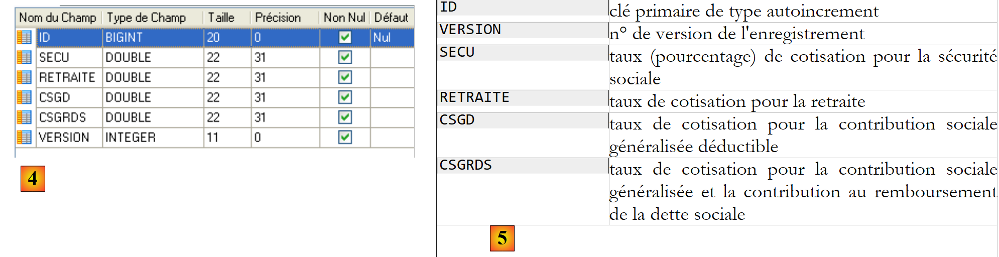

3. دراسة الحالة
نريد كتابة تطبيق .NET يسمح للمستخدم بمحاكاة حسابات الرواتب لمقدمي خدمات رعاية الأطفال في جمعية "Maison de la petite enfance" في إحدى البلديات. سنركز على تنظيم كود .NET الخاص بالتطبيق بقدر ما سنركز على الكود نفسه.
3.1. قاعدة البيانات
يتم تخزين البيانات الثابتة اللازمة لإنشاء كشف الراتب في قاعدة بيانات SQL Server Express باسم dbpam (pam = Paie Assistante Maternelle). لهذه القاعدة بيانات مسؤول باسم sa وكلمة مرور msde.
 |
تحتوي قاعدة البيانات على ثلاثة جداول، هي EMPLOYEES و CONTRIBUTIONS و ALLOWANCES، بالهيكل التالي:
Table EMPLOYES : rassemble des informations sur les différentes assistantes maternelles
الهيكل:
 |
|
ويمكن أن يكون نصه كما يلي:

Table COTISATIONS : rassemble les taux des cotisations sociales prélevées sur le salaire
الهيكل:
 |
يمكن أن يكون محتواه كما يلي:
معدلات اشتراكات الضمان الاجتماعي مستقلة عن الموظف. يحتوي الجدول السابق على صف واحد فقط.
Table INDEMNITES : rassemble les différentes indemnités dépendant de l'indice de l'employé
 |
|
ويمكن أن يكون نصه كما يلي:

يرجى ملاحظة أن البدلات قد تختلف من مقدم رعاية أطفال إلى آخر. فهي مرتبطة بمقدم رعاية أطفال معين من خلال درجة الراتب الخاصة بذلك المقدم. وبالتالي، فإن السيدة ماري جوفينال، التي تبلغ درجة راتبها 2 (جدول الموظفين)، تحصل على أجر ساعي قدره 2.1 يورو (جدول التعويضات).
العلاقات بين الجداول الثلاثة هي كما يلي:
 |
توجد علاقة مفتاح خارجي بين عمود EMPLOYEES(INDEX) وعمود ALLOWANCES(INDEX).
تقوم قاعدة البيانات [dbpam] التي تم إنشاؤها بهذه الطريقة بإنشاء ملفين في مجلد SQL Server Express:
 |
يمكن نقل الملفين [dbpam.mdf، dbpam_log.ldf] إلى جهاز آخر وإعادة ربطهما بنظام إدارة قواعد البيانات SQL Server Express الخاص بذلك الجهاز. وإليك كيفية القيام بذلك:
- يتم نسخ ملفات قاعدة البيانات [dbpam] إلى مجلد
 |
- قم بتشغيل SQL Server Express
- باستخدام عميل SQL Server Management Studio Express، قم بإرفاق ملف [dbpam.mdf] بالقاعدة البيانات:
 |
 |
- انقر بزر الماوس الأيمن على [قواعد البيانات] / إرفاق
- حدد ملف [dbpam.mdf] باستخدام زر [إضافة] (غير معروض)
- سيؤدي الملف المرفق إلى إنشاء قاعدة بيانات يجب ألا تكون موجودة بالفعل. هنا، في حقل [إرفاق كـ]، قمنا بتسمية قاعدة البيانات الجديدة [dbpam2].
- يمكنك رؤية قاعدة البيانات الجديدة وجداولها
هذه التقنية لإرفاق قاعدة بيانات مفيدة لنقل قاعدة بيانات من جهاز كمبيوتر إلى آخر، وسنستخدمها من حين لآخر هنا.
3.2. طريقة حساب راتب مقدم رعاية الأطفال
سنعرض الآن طريقة حساب الراتب الشهري لمقدمي رعاية الأطفال. وكمثال على ذلك، سنستخدم راتب السيدة ماري جوفينال، التي عملت 150 ساعة على مدار 20 يومًا خلال فترة الدفع.
يتم أخذ العوامل التالية في الاعتبار: | | |
يتم حساب الراتب الأساسي لمقدم رعاية الأطفال باستخدام الصيغة التالية: | ||
يجب خصم عدد من اشتراكات الضمان الاجتماعي من هذا الراتب الأساسي: | | |
إجمالي اشتراكات الضمان الاجتماعي: | ||
بالإضافة إلى ذلك، يحق لمقدمة رعاية الأطفال الحصول على بدل معيشة يومي وبدل وجبات عن كل يوم عمل. وبناءً على ذلك، تتلقى البدلات التالية: | ||
في النهاية، يكون الراتب الصافي الذي سيُدفع لمربية الأطفال كما يلي: |
3.3. تذكيرات ADO.NET
يتطلب تطبيق حساب الرواتب معلومات من قاعدة البيانات [dbpam]. وستكون بنيته على النحو التالي:
 |
- في [1]، يقوم المستخدم بإرسال طلب
- في [2]، يقوم تطبيق الرواتب بمعالجته.
- قد يحتاج بعد ذلك إلى بيانات من قاعدة البيانات. ثم يرسل استعلامًا إلى موفر ADO.NET لنظام إدارة قواعد البيانات المستخدم [4].
- يقوم المزود بالوصول إلى قاعدة البيانات [5] وإرجاع النتائج إلى مزود ADO.NET، الذي يقوم بدوره بإعادة تمريرها إلى التطبيق
- يقوم التطبيق بمعالجة هذه النتائج وإنشاء استجابة [5] للمستخدم
سنستعرض الآن الواجهات الرئيسية التي يوفرها مزود ADO.NET لعملائه [3].
في الوضع المتصل، يقوم التطبيق بما يلي:
- يفتح اتصالاً بمصدر البيانات
- يعمل مع مصدر البيانات في وضع القراءة/الكتابة
- يغلق الاتصال
تشارك ثلاث واجهات ADO.NET بشكل أساسي في هذه العمليات:
- IDbConnection، التي تغلف خصائص وأساليب الاتصال.
- IDbCommand، التي تغلف خصائص وأساليب أمر SQL الذي تم تنفيذه.
- IDataReader، التي تغلف خصائص وأساليب نتيجة عبارة SQL SELECT.
واجهة IDbConnection
لإدارة الاتصال بقاعدة البيانات. ومن بين الأساليب (M) والخصائص (P) لهذه الواجهة ما يلي:
الاسم | النوع | الدور |
P | سلسلة اتصال قاعدة البيانات. تحدد جميع المعلمات المطلوبة لإنشاء اتصال بقاعدة بيانات معينة. | |
M | يفتح الاتصال بقاعدة البيانات المحددة بواسطة ConnectionString | |
M | يغلق الاتصال | |
M | يبدأ معاملة. | |
P | حالة الاتصال: ConnectionState.Closed، ConnectionState.Open، ConnectionState.Connecting، ConnectionState.Executing، ConnectionState.Fetching، ConnectionState.Broken |
إذا كانت Connection فئة تنفذ واجهة IDbConnection، فيمكن فتح الاتصال على النحو التالي:
واجهة IDbCommand
لتنفيذ عبارة SQL أو إجراء مخزن. ومن بين الأساليب M والخصائص P لهذه الواجهة ما يلي:
الاسم | النوع | الدور |
P | يحدد ما يجب تنفيذه - يأخذ قيمه من قائمة: - CommandType.Text: ينفذ عبارة SQL المحددة في الخاصية CommandText. هذه هي القيمة الافتراضية. - CommandType.StoredProcedure: ينفذ إجراءً مخزّنًا في قاعدة البيانات | |
P | - نص عبارة SQL المطلوب تنفيذها إذا كان CommandType= CommandType.Text - اسم الإجراء المخزن المراد تنفيذه إذا كان CommandType= CommandType.StoredProcedure | |
P | اتصال IDbConnection المراد استخدامه لتنفيذ عبارة SQL | |
P | معاملة IDbTransaction التي سيتم تنفيذ عبارة SQL فيها | |
P | قائمة المعلمات لعبارة SQL المعلمة. تحتوي العبارة `update articles set price=price*1.1 where id=@id` على المعلمة `@id`. | |
M | لتنفيذ عبارة SQL من نوع SELECT. يعيد هذا كائن IDataReader يمثل نتيجة عبارة SELECT. | |
M | لتنفيذ عبارة SQL Update أو Insert أو Delete. يتم إرجاع عدد الصفوف المتأثرة بالعملية (المحدثة أو المضافة أو المحذوفة). | |
M | لتنفيذ عبارة SQL Select التي تُرجع نتيجة واحدة، مثل: select count(*) from articles. | |
M | لإنشاء معلمات IDbParameter لعبارة SQL المعلمة. | |
M | يتيح لك تحسين تنفيذ استعلام معلم عندما يتم تنفيذه عدة مرات بمعلمات مختلفة. |
إذا كانت Command فئة تنفذ واجهة IDbCommand، فسيتخذ تنفيذ عبارة SQL بدون معاملة الشكل التالي:
واجهة IDataReader
تُستخدم لتغليف نتائج عبارة SQL Select. يمثل كائن IDataReader جدولاً يحتوي على صفوف وأعمدة، يتم معالجتها بالتسلسل: أولاً الصف الأول، ثم الثاني، وهكذا. ومن بين الأساليب (M) والخصائص (P) لهذه الواجهة ما يلي:
الاسم | النوع | الدور |
P | عدد الأعمدة في جدول IDataReader | |
M | تُرجع الدالة GetName(i) اسم العمود i في جدول IDataReader. | |
P | يمثل Item[i] العمود رقم i في الصف الحالي في جدول IDataReader. | |
M | ينتقل إلى الصف التالي في جدول IDataReader. يُرجع True إذا تمت قراءة الصف بنجاح، وإلا يُرجع False. | |
M | يغلق جدول IDataReader. | |
M | GetBoolean(i): تُرجع القيمة المنطقية للعمود i في الصف الحالي من جدول IDataReader. تتضمن الطرق المماثلة الأخرى: GetDateTime، GetDecimal، GetDouble، GetFloat، GetInt16، GetInt32، GetInt64، GetString. | |
M | Getvalue(i): تُرجع قيمة العمود i في الصف الحالي من جدول IDataReader كنوع كائن. | |
M | تُرجع IsDBNull(i) القيمة True إذا كان العمود i في الصف الحالي في جدول IDataReader لا يحتوي على قيمة، وهو ما يمثله القيمة SQL NULL. |
غالبًا ما يبدو استخدام كائن IDataReader كما يلي: